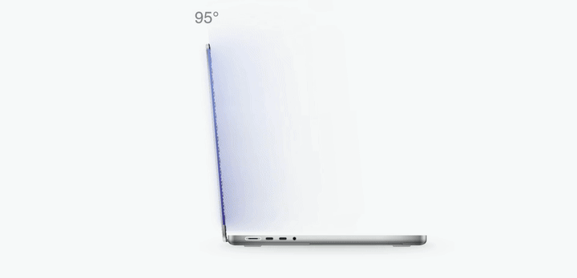

Softfold press kit
The iPhone Duo-style fold animation, on the MacBook you already own. As you close the lid, your live desktop leans, blurs and folds away, following the real hinge angle. Lift it and everything comes back, sharp.

Fast facts
- Price: free, open source (MIT).
- Download: reffwu.github.io/apps/softfold · github.com/ReffWu/softfold
- Signed and notarized by Apple, so it opens normally with no Gatekeeper workaround.
- Follows the lid angle sensor continuously instead of playing a fixed animation. Stop halfway and the desktop turns sharp again after a second; close further and it folds again.
- Upright to your eyes: the image is shaped against the tilt, so text stays straight as the lid leans.
- Recognizes your MacBook model and color and draws it in the app.
- 16 languages, including Japanese, Korean, French, Spanish, Italian, Turkish, Polish and Dutch.
- Privacy: Screen Recording is read only while the desktop folds; frames stay in memory, nothing is saved or sent.
- Not affiliated with Apple. iPhone Duo and MacBook are trademarks of Apple Inc.
Compatibility
Works: MacBook Pro 14″ and 16″ from 2021 (M1 Pro / Max and later), MacBook Air 13″ and 15″ with M2 or later, macOS 14 or later.
Doesn’t work: M1 MacBook Air, 13″ MacBook Pro with Touch Bar (Intel, M1, M2), all Intel MacBooks, MacBook Neo. Rule of thumb: if the display has a notch, it works.
Videos and screenshots
Vertical 1080×1920 clips, free to embed or re-upload with credit. Every clip shows real Softfold behavior rendered from the app’s own shader.
{kind=link}
{kind=link}
{kind=link}
{kind=link}
{kind=link}
{kind=link}
{kind=link}
{kind=link}
{kind=link}
{kind=link}
Landscape video: light · dark · Icon: PNG
{kind=link}
About the developer
Softfold is made by Reff Wu, an independent developer building small, careful Mac apps. The first Softfold clip reached more than 50,000 views on Xiaohongshu.
Contact
Reff Wu · reffwu@gmail.com · Happy to answer questions, give a quote or record a custom clip in your language.